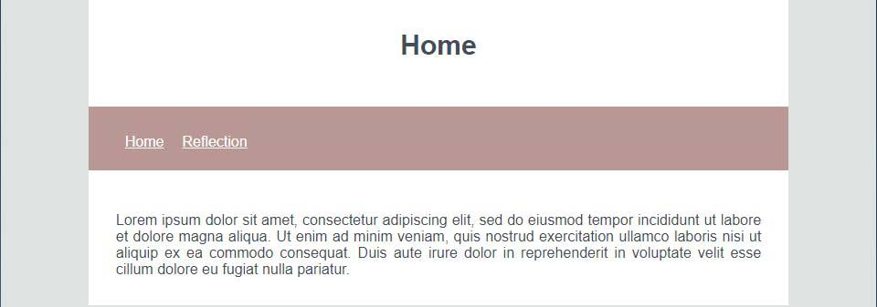

For the first micro-assignment, I chose the home page of the KidsCan website to emulate. It was a fairly straightforward page and I only emulated the top half of the page. I found this MA to be very helpful in refreshing my prior knowledge of HTML and CSS and I found that I also had a chance to explore aligning multiple images which I had not done before. I struggled the most with aligning elements and in particular images. I was able to make a single image centre but I could not get the row of images to start in the centre. I also had trouble getting the text in the footer to format correctly.
Reflections
Blog entrys:
First Micro-Assignment
Date posted: Tuesday 21st July 2020

Creating blog
Date posted: Thursday 23rd July 2020

I started making the main elements of my blog today, following the wireframes that I created on Figma. So far I have created the nav and linked the two pages together. I have added the main title to each page to make it easier to distinguish which page you are currently on. My next steps would be to continue to develop my wireframes to include a couple of different templates for different blog posts. This will allow me to have a more flexible design to work with when I have different sized pictures and different blocks of text.
Flexbox
Date posted: Tuesday 28th July 2020

In tutorial 5, I learnt how to use flexbox to position items on the screen. I had the most trouble working out how to align the table using flex-direction and stretch but I was able to get it to work after I realised I had not defined the flex container on the table class. Flexbox is a very helpful tool that I will continue to use in future projects as it is able to format elements in a lot of different ways.
Responsive Wireframes
Date posted: Thursday 30th July 2020

In today's class, I focused on creating wireframes for the mobile and tablet view of my blog. As my blog will be responsive, I needed to plan what the different page sizes would look like. Responsiveness is an important aspect to consider as it allows people who may be viewing my blog to use different devices and still receive the designed output I have created.
Assignment 1 progress
Date posted: Tuesday 4th August 2020
I continued to work on developing my first concept wireframe for Assignment 1 in class today. By breaking down the user's needs and motivations, I was able to get a clear picture on how many pages I would be needing to create and what needed to be on them. For this concept, I was focusing on aligning everything and having a simple, clean layout that would match the clean, fresh mood board I created.